主控板安装
零件列表
| 项目 | 个数 |
| 6mm软管或尼龙管 | 3 |
| M3*10 | 1 |
| M3*30(带螺母) | 3 |
| M3尼龙柱 | 1 |
| 控制板一套（1Arduino+1RAMPS+4驱动器） | 1 |
安装步骤
准备好3个M330螺栓（含螺母），1个M310螺栓，1个M3尼龙柱，剪三段6毫米左右塑料管（或用尼龙管代替）
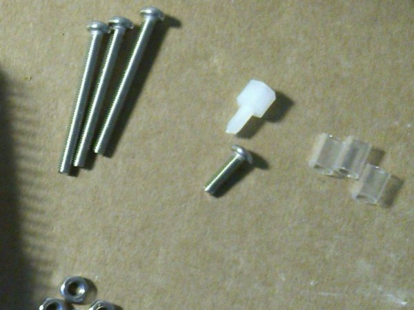
先检视一下主控板上需要用到的接口：
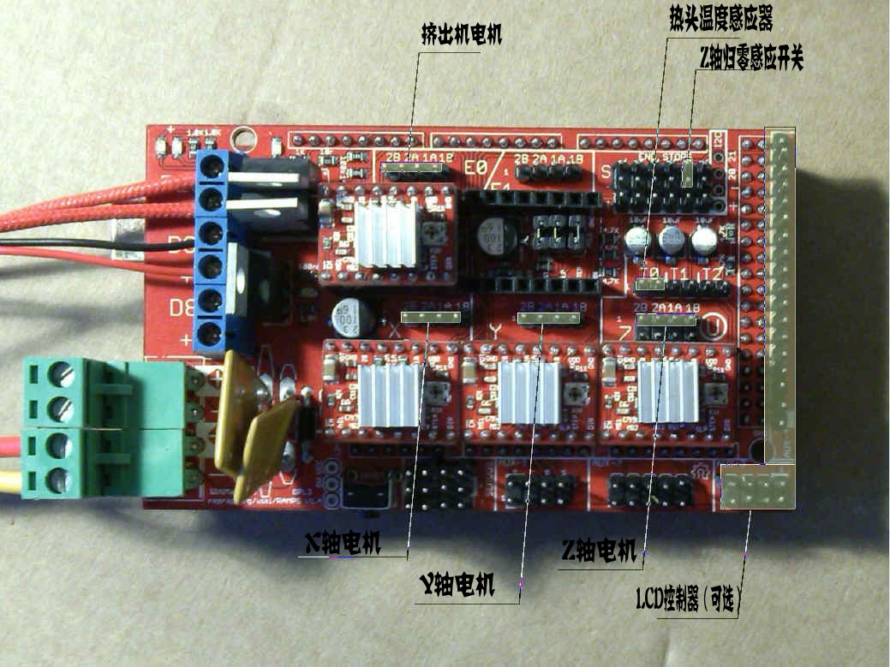
连接好主控板的电源插口（特别要注意正负极，上方红线为正，否则可能烧毁主控板），电源适配器连接头上的正负有标注，注意检查一下。
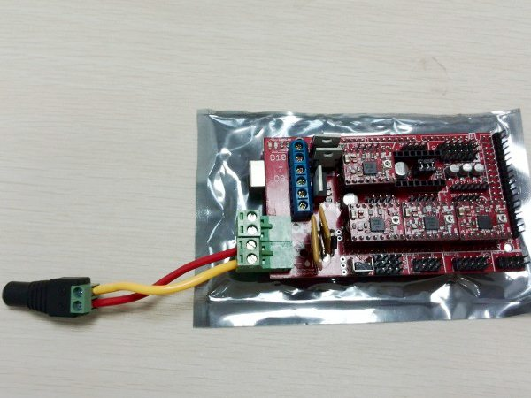
为了方便说明接线方法，这里直接开始接线（实际需要先把主板固定到机框内后才能接线）
连接热头加热线缆（无正负极）和热头感温线缆（无正负极）
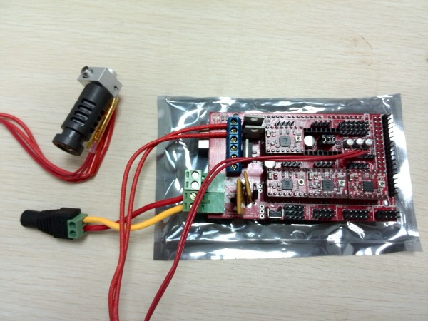
Z归零感应开关接上"S"和"-"。（开关的“C”接主板“S”，“NC”接主板“-”）
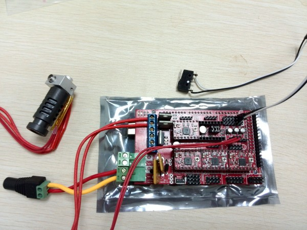
连接风扇插头（注意正负极，下方红线为正，否则风扇反转）
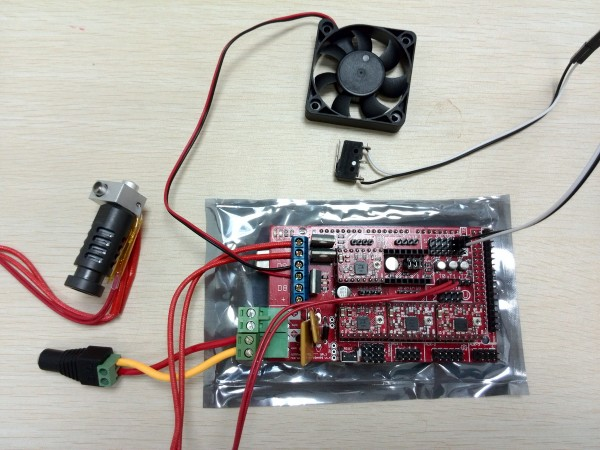
连接4个电机：接上XYZ和E（挤出机电机）的电机线缆，注意XYZ电机线缆和挤出机E电机线缆都要反序。（附图E电机接反了）
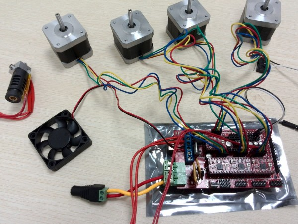
电机接线详细图：
连接上线缆后的板子，XYZ轴都反序按蓝黄绿红接线，挤出机反序也按蓝黄绿红接线。（附图E电机接反了）
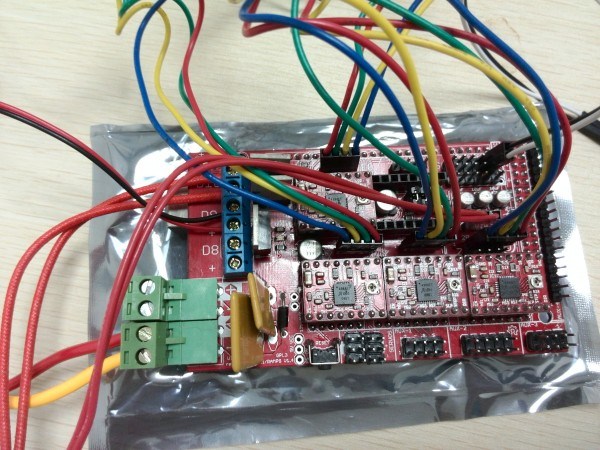
有LCD控制器的话，接上LCD控制器线缆，连接LCD智能屏的方法：
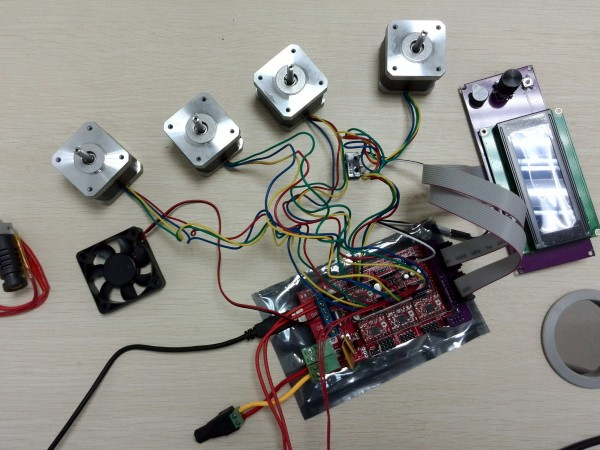
下面介绍一下如何安装主控板到机框：
如图所示，把主控板安装到框架左面板内部
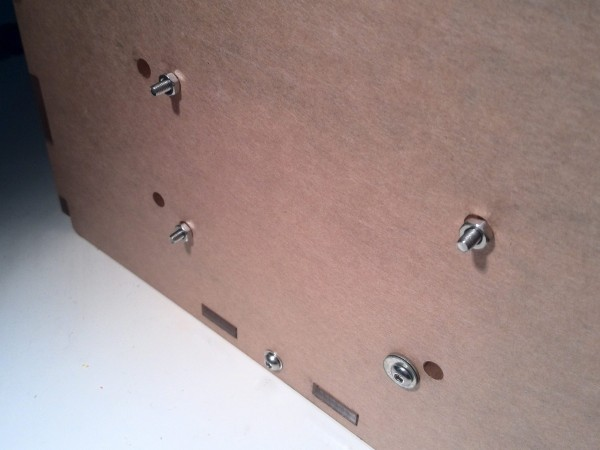
参考一下透视图比较清楚：
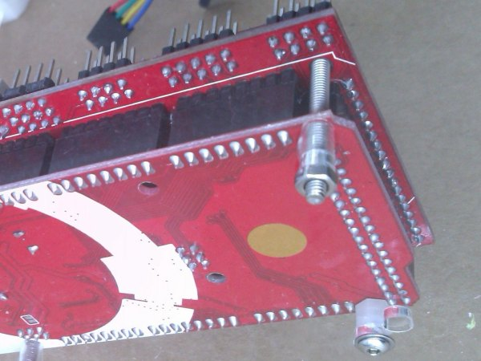
在已经安装到面板的情况下接线参考下面两张图（板子反了过来），其中Y电机接线和热头感温接线需要加延长线。
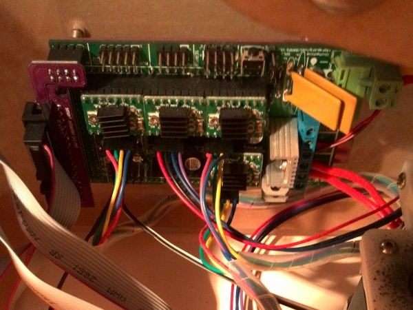
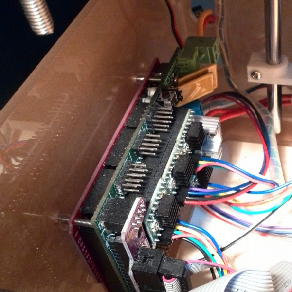